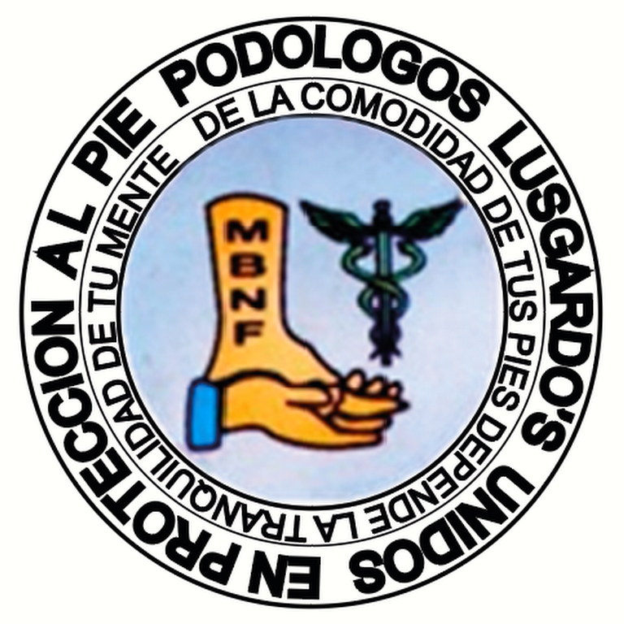

Currículo
Titulado
Universidad Politécnica de Tecámac (Septiembre 2017 - Diciembre 2020)


Experiencia Laboral de 1 año 5 meses
Universidad Politécnica de Tecámac
(Estancia) Enero – Abril 2019
Continuación de proyecto web institucional para exámenes en línea realizando un diseño frontend y un diagramado de la base de datos. (HTML5, CSS3, Diagramas EER)
Consultorio Podológico Lusgardo’s
(Estancia) Septiembre – Diciembre 2019
Creación de sistema modular en Java para gestión de información de compraventa de artículos podológicos y generación de consultas médicas. (Java SE, POO, MYSQL)
Kaizen México Kukulkan Martial Arts A.C.
(Servicio Social) Enero – Julio 2020
Desarrollo de formulario web responsive generador de solicitudes en PDF para cambios de grado con alojamiento en hosting gratuito. (HTML5, CSS3, JavaScript)